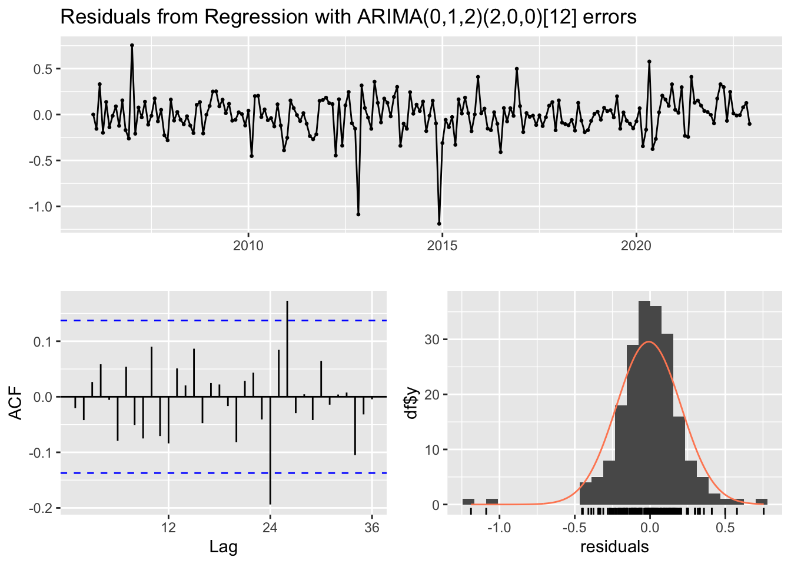
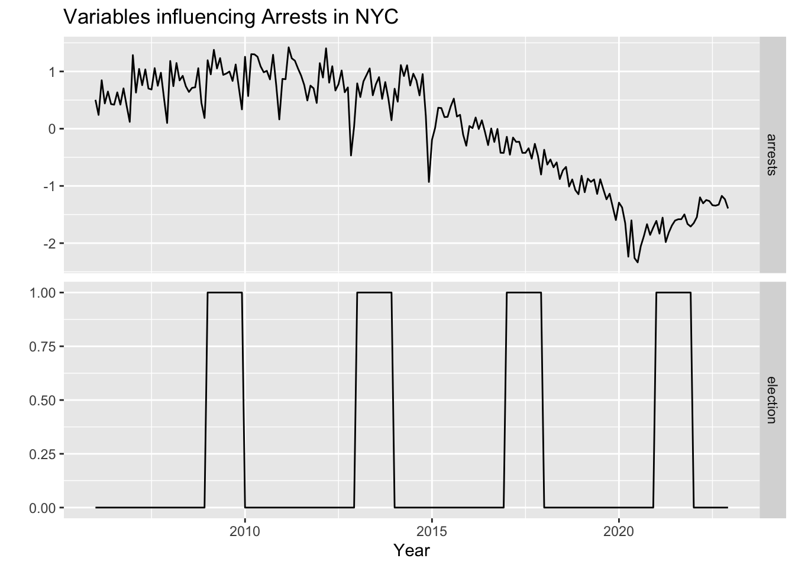
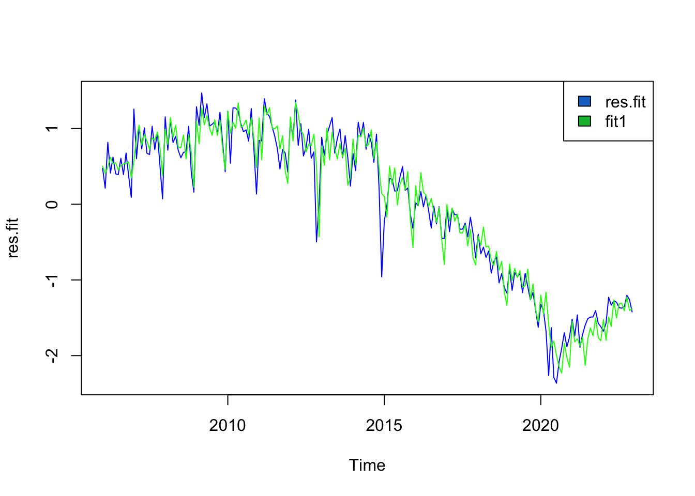
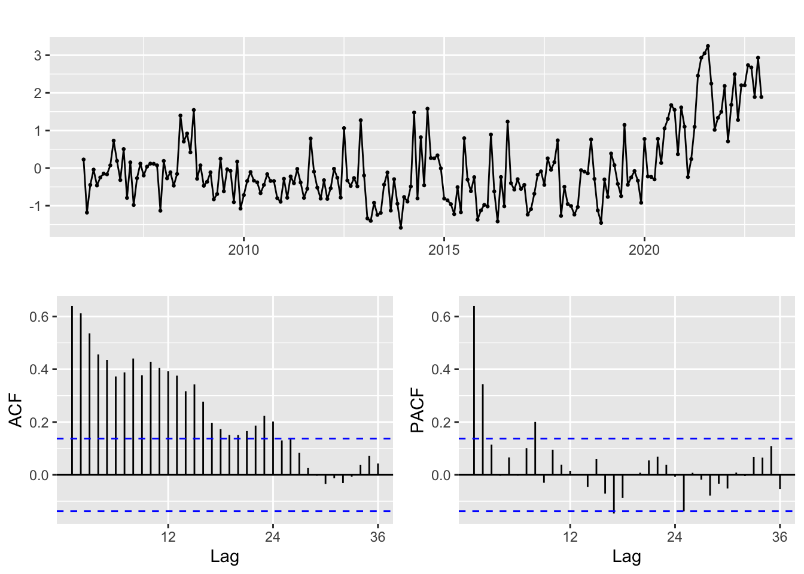

| month | arrests | unrate |
|---|---|---|
| 2006-01-01 | 31161 | 5.0 |
| 2006-02-01 | 28962 | 5.2 |
| 2006-03-01 | 34014 | 4.8 |
| 2006-04-01 | 30636 | 4.5 |
| 2006-05-01 | 32368 | 4.4 |
| 2006-06-01 | 30540 | 4.5 |
ARIMAX/SARIMAX/VAR
Exogenous Variables
The number of arrests made in any city, especially one as large and diverse as New York City, is a figure that is influenced by many variables in addition to time. This means that modelling the number of arrests only on time may result in overlooking valuable information that could be used to fit a model that could forecast arrests even more accurately. Similar work has been done in the past, relating both the economy and labor markets to crime statistics.
We will take that approach here, drawing inspiration on the work mentioned in the introduction by Freeman in which he looks at “the way decisions interact in a market setting” (Freeman 1999). He exhibits an important understanding of the influence economic factors have on crime, treating crime rates as another variable in our complex economic system. Looking at the labor market would be beneficial as well, as in the 1980’s and 90’s crime was seen to be closely related to unemployment rates (Gould, Weinberg, and Mustard 2002).
Another variable that might be useful to look at is the state of the current election cycle. It is possible that when public officials are up for re-election, they might be more incentivized to take more action to lower crime rates.
Models to Fit
Two types of models will be fit here. We will use an ARIMAX or SARIMAX model when looking at the effect of one or more exogenous variables in predicting the number of arrests. We will use a VAR model when looking at how crime and other time series variables are influenced by each other. The specific models are listed below:
(ARIMAX) Total Arrests ~ Unemployment Rate
(ARIMAX) Total Arrests ~ Election Year
(ARIMAX) Murder ~ Unemployment Rate + GDP
(VAR) Robbery ~ Unemployment Rate
(VAR) Controlled Substance Possession ~ Marijuana Possession
Total Arrests ~ Unemployment Rate
We have a univariate time series in total arrests and we want to see the effect the exogenous variable of unemployment rate has on that time series. We will fit an ARIMAX model, Total Arrests ~ Unemployment Rate. Unemployment data is for the New York City Metropolitan Area and obtained from here.

There looks to be some relation between these two variables, with the spike in 2020 in unemployment rate being at the same time as the low arrest rate, though we should fit a model to see if this relationship is substantial.
Fitting Using auto.arima
Series: dd.ts[, "arrests"]
Regression with ARIMA(0,1,2)(2,0,0)[12] errors
Coefficients:
ma1 ma2 sar1 sar2 xreg
-0.4433 -0.2617 0.4377 0.3516 -415.3528
s.e. 0.0716 0.0717 0.0636 0.0664 104.6520
sigma^2 = 3278067: log likelihood = -1813.8
AIC=3639.59 AICc=3640.02 BIC=3659.47
Training set error measures:
ME RMSE MAE MPE MAPE MASE
Training set -72.90552 1783.719 1245.697 -0.4868256 5.528259 0.4816615
ACF1
Training set -0.02051394
Ljung-Box test
data: Residuals from Regression with ARIMA(0,1,2)(2,0,0)[12] errors
Q* = 23.864, df = 20, p-value = 0.2484
Model df: 4. Total lags used: 24We have a SARIMAX model, a regression model with ARIMA(0,1,2)(2,0,0)[12] errors.
Fitting Manually
We first fit a linear regression model predicting arrests using unemployment rate. The we will fit an ARIMA/SARIMA model for the residuals.
Call:
lm(formula = arrests ~ unrate, data = dd)
Residuals:
Min 1Q Median 3Q Max
-22923 -6217 2578 6683 11433
Coefficients:
Estimate Std. Error t value Pr(>|t|)
(Intercept) 24364.8 1627.5 14.971 <2e-16 ***
unrate 409.5 240.4 1.704 0.09 .
---
Signif. codes: 0 '***' 0.001 '**' 0.01 '*' 0.05 '.' 0.1 ' ' 1
Residual standard error: 8306 on 202 degrees of freedom
Multiple R-squared: 0.01416, Adjusted R-squared: 0.009283
F-statistic: 2.902 on 1 and 202 DF, p-value: 0.09res.fit <- ts(residuals(fit.reg), start = c(2006, 1), frequency = 12)
ggtsdisplay(res.fit)ggtsdisplay(res.fit %>% diff())
ggtsdisplay(res.fit %>% diff() %>% diff(12))
We will try the following parameters:
- p: 1, 4
- d: 0, 1
- q: 1, 4
- P: 1
- D: 0, 1
- Q: 1, 2, 3
Model Selection and Diagnostics
Minimum AIC
| p | d | q | P | D | Q | AIC | BIC | AICc | |
|---|---|---|---|---|---|---|---|---|---|
| 12 | 1 | 1 | 1 | 1 | 1 | 3 | 3439.632 | 3462.398 | 3440.244 |
Minimum BIC
| p | d | q | P | D | Q | AIC | BIC | AICc | |
|---|---|---|---|---|---|---|---|---|---|
| 8 | 1 | 1 | 1 | 1 | 1 | 1 | 3439.95 | 3456.211 | 3440.274 |
Minimum AICc
| p | d | q | P | D | Q | AIC | BIC | AICc | |
|---|---|---|---|---|---|---|---|---|---|
| 12 | 1 | 1 | 1 | 1 | 1 | 3 | 3439.632 | 3462.398 | 3440.244 |
It is clear that the best model is one with parameters \(p=1, d=1, q=1, P=1, D=1, Q=3\). We now check the model diagnostics.

The Ljung-Box statistic p-values suggest that there is no correlation between residuals, meaning we have a good enough model. We will proceed with the model SARIMA(1, 1, 1)(1, 1, 2)12. The information criteria are all similar between the auto model and this model. We will proceed with this model.
Fitted vs. Actual

Cross Validation
Warning in window.default(x, ...): 'end' value not changed
Warning in window.default(x, ...): 'end' value not changed
Warning in window.default(x, ...): 'end' value not changed
Warning in window.default(x, ...): 'end' value not changed
Warning in window.default(x, ...): 'end' value not changed
Warning in window.default(x, ...): 'end' value not changed
Warning in window.default(x, ...): 'end' value not changed
Warning in window.default(x, ...): 'end' value not changed
Warning in window.default(x, ...): 'end' value not changed
Warning in window.default(x, ...): 'end' value not changed
Warning in window.default(x, ...): 'end' value not changed
Forecasting
Total Arrests ~ Election Year
Murder ~ Unemployment Rate
| month | murder | unrate |
|---|---|---|
| 2006-01-01 | 90 | 5.0 |
| 2006-02-01 | 56 | 5.2 |
| 2006-03-01 | 74 | 4.8 |
| 2006-04-01 | 84 | 4.5 |
| 2006-05-01 | 74 | 4.4 |
| 2006-06-01 | 79 | 4.5 |

There looks to be some relation between these two variables, though we should fit a model to see if this relationship is substantial.
Fitting Using auto.arima
Series: dd.ts[, "murder"]
Regression with ARIMA(0,1,1) errors
Coefficients:
ma1 xreg
-0.7259 -0.4942
s.e. 0.0674 0.9076
sigma^2 = 280.1: log likelihood = -859.4
AIC=1724.8 AICc=1724.92 BIC=1734.74
Training set error measures:
ME RMSE MAE MPE MAPE MASE ACF1
Training set 1.041573 16.61411 12.66717 -2.430242 15.61884 0.696676 0.05569138
Ljung-Box test
data: Residuals from Regression with ARIMA(0,1,1) errors
Q* = 49.231, df = 23, p-value = 0.001161
Model df: 1. Total lags used: 24We have an ARIMAX model, a regression model with ARIMA(0,1,1) errors.
Fitting Manually
We first fit a linear regression model predicting arrests using unemployment rate. The we will fit an ARIMA/SARIMA model for the residuals.
Call:
lm(formula = murder ~ unrate, data = dd)
Residuals:
Min 1Q Median 3Q Max
-37.977 -16.070 -5.972 6.820 77.749
Coefficients:
Estimate Std. Error t value Pr(>|t|)
(Intercept) 89.0559 4.6885 18.99 <2e-16 ***
unrate -0.9073 0.6925 -1.31 0.192
---
Signif. codes: 0 '***' 0.001 '**' 0.01 '*' 0.05 '.' 0.1 ' ' 1
Residual standard error: 23.93 on 202 degrees of freedom
Multiple R-squared: 0.008426, Adjusted R-squared: 0.003517
F-statistic: 1.717 on 1 and 202 DF, p-value: 0.1916res.fit <- ts(residuals(fit.reg), start = c(2006, 1), frequency = 12)
ggtsdisplay(res.fit)ggtsdisplay(res.fit %>% diff())
We will try the following parameters:
- p: 1, 2, 4
- d: 0, 1
- q: 1
Model Selection and Diagnostics
Minimum AIC
| p | d | q | AIC | BIC | AICc | |
|---|---|---|---|---|---|---|
| 2 | 1 | 1 | 1 | 1723.056 | 1732.996 | 1723.177 |
Minimum BIC
| p | d | q | AIC | BIC | AICc | |
|---|---|---|---|---|---|---|
| 2 | 1 | 1 | 1 | 1723.056 | 1732.996 | 1723.177 |
Minimum AICc
| p | d | q | AIC | BIC | AICc | |
|---|---|---|---|---|---|---|
| 2 | 1 | 1 | 1 | 1723.056 | 1732.996 | 1723.177 |
It is clear that the best model is one with parameters \(p=1, d=1, q=1\). We now check the model diagnostics.

Fitted vs. Actual

Cross Validation
Forecasting

Adding unemployment rate resulted in little change from the previous model, suggesting that the two are not related.
Robbery ~ Unemployment Rate
| month | robbery | unrate |
|---|---|---|
| 2006-01-01 | 1072 | 5.0 |
| 2006-02-01 | 890 | 5.2 |
| 2006-03-01 | 1081 | 4.8 |
| 2006-04-01 | 838 | 4.5 |
| 2006-05-01 | 1063 | 4.4 |
| 2006-06-01 | 1143 | 4.5 |

There looks to be some relation between these two variables, with the spike in 2020 in unemployment rate being at the same time as the low arrest rate, though we should fit a model to see if this relationship is substantial.
Fitting Using VARSelect
$selection
AIC(n) HQ(n) SC(n) FPE(n)
3 3 3 3
$criteria
1 2 3 4 5 6
AIC(n) 8.811450 8.653570 8.542288 8.559735 8.554125 8.545074
HQ(n) 8.866017 8.735420 8.651422 8.696153 8.717826 8.736058
SC(n) 8.946207 8.855705 8.811802 8.896628 8.958396 9.016724
FPE(n) 6710.718932 5730.792125 5127.543707 5218.254569 5189.751973 5143.950006
7 8 9 10
AIC(n) 8.576251 8.582496 8.587842 8.611119
HQ(n) 8.794519 8.828047 8.860677 8.911237
SC(n) 9.115279 9.188902 9.261627 9.352283
FPE(n) 5308.169440 5343.126431 5373.917935 5503.165040Clearly p = 3 is a good parameter, we will also try VAR(1) in addition to VAR(3)
VAR Estimation Results:
=========================
Endogenous variables: robbery, unrate
Deterministic variables: both
Sample size: 203
Log Likelihood: -1463.609
Roots of the characteristic polynomial:
0.9406 0.2057
Call:
vars::VAR(y = dd[, c(2, 3)], p = 1, type = "both")
Estimation results for equation robbery:
========================================
robbery = robbery.l1 + unrate.l1 + const + trend
Estimate Std. Error t value Pr(>|t|)
robbery.l1 0.20839 0.06938 3.004 0.00301 **
unrate.l1 -8.72946 2.91948 -2.990 0.00314 **
const 903.78956 82.66946 10.933 < 2e-16 ***
trend -1.50118 0.17672 -8.495 4.6e-15 ***
---
Signif. codes: 0 '***' 0.001 '**' 0.01 '*' 0.05 '.' 0.1 ' ' 1
Residual standard error: 96.96 on 199 degrees of freedom
Multiple R-Squared: 0.5853, Adjusted R-squared: 0.579
F-statistic: 93.62 on 3 and 199 DF, p-value: < 2.2e-16
Estimation results for equation unrate:
=======================================
unrate = robbery.l1 + unrate.l1 + const + trend
Estimate Std. Error t value Pr(>|t|)
robbery.l1 -0.0002225 0.0005965 -0.373 0.710
unrate.l1 0.9379922 0.0251024 37.367 <2e-16 ***
const 0.7071527 0.7108128 0.995 0.321
trend -0.0012162 0.0015194 -0.800 0.424
---
Signif. codes: 0 '***' 0.001 '**' 0.01 '*' 0.05 '.' 0.1 ' ' 1
Residual standard error: 0.8337 on 199 degrees of freedom
Multiple R-Squared: 0.884, Adjusted R-squared: 0.8822
F-statistic: 505.5 on 3 and 199 DF, p-value: < 2.2e-16
Covariance matrix of residuals:
robbery unrate
robbery 9401.877 -2.6771
unrate -2.677 0.6951
Correlation matrix of residuals:
robbery unrate
robbery 1.00000 -0.03312
unrate -0.03312 1.00000
VAR Estimation Results:
=========================
Endogenous variables: robbery, unrate
Deterministic variables: both
Sample size: 201
Log Likelihood: -1413.95
Roots of the characteristic polynomial:
0.9289 0.6725 0.5582 0.5582 0.3277 0.3277
Call:
vars::VAR(y = dd[, c(2, 3)], p = 3, type = "both")
Estimation results for equation robbery:
========================================
robbery = robbery.l1 + unrate.l1 + robbery.l2 + unrate.l2 + robbery.l3 + unrate.l3 + const + trend
Estimate Std. Error t value Pr(>|t|)
robbery.l1 0.11734 0.06921 1.695 0.09162 .
unrate.l1 -12.27304 8.36123 -1.468 0.14377
robbery.l2 0.19228 0.06843 2.810 0.00547 **
unrate.l2 -13.60799 13.07032 -1.041 0.29911
robbery.l3 0.21359 0.07056 3.027 0.00281 **
unrate.l3 21.96316 8.28195 2.652 0.00867 **
const 536.28009 113.03850 4.744 4.06e-06 ***
trend -0.91250 0.21922 -4.162 4.74e-05 ***
---
Signif. codes: 0 '***' 0.001 '**' 0.01 '*' 0.05 '.' 0.1 ' ' 1
Residual standard error: 91.34 on 193 degrees of freedom
Multiple R-Squared: 0.6397, Adjusted R-squared: 0.6267
F-statistic: 48.96 on 7 and 193 DF, p-value: < 2.2e-16
Estimation results for equation unrate:
=======================================
unrate = robbery.l1 + unrate.l1 + robbery.l2 + unrate.l2 + robbery.l3 + unrate.l3 + const + trend
Estimate Std. Error t value Pr(>|t|)
robbery.l1 -0.0010184 0.0005781 -1.762 0.07971 .
unrate.l1 1.3043726 0.0698394 18.677 < 2e-16 ***
robbery.l2 0.0012443 0.0005716 2.177 0.03070 *
unrate.l2 -0.5625895 0.1091733 -5.153 6.31e-07 ***
robbery.l3 0.0010322 0.0005894 1.751 0.08149 .
unrate.l3 0.2039627 0.0691772 2.948 0.00359 **
const -0.9391336 0.9441842 -0.995 0.32115
trend 0.0016859 0.0018311 0.921 0.35835
---
Signif. codes: 0 '***' 0.001 '**' 0.01 '*' 0.05 '.' 0.1 ' ' 1
Residual standard error: 0.7629 on 193 degrees of freedom
Multiple R-Squared: 0.9055, Adjusted R-squared: 0.9021
F-statistic: 264.2 on 7 and 193 DF, p-value: < 2.2e-16
Covariance matrix of residuals:
robbery unrate
robbery 8342.568 -8.0105
unrate -8.011 0.5821
Correlation matrix of residuals:
robbery unrate
robbery 1.000 -0.115
unrate -0.115 1.000Cross Validation


[1] 132.5029[1] 131.5768[1] 2.254941[1] 1.948857The models are very close in performance, but it looks like VAR(3) is slightly better so we will forecast with that model.
Forecast

Controlled Substance Possession ~ Marijuana Possession
Freeman, Richard B. 1999. “Chapter 52 The Economics of Crime.” In Handbook of Labor Economics, 3:3529–71. Elsevier. https://doi.org/10.1016/S1573-4463(99)30043-2.
Gould, Eric D., Bruce A. Weinberg, and David B. Mustard. 2002. “Crime Rates and Local Labor Market Opportunities in the United States: 1979–1997.” Review of Economics and Statistics 84 (1): 45–61. https://doi.org/10.1162/003465302317331919.